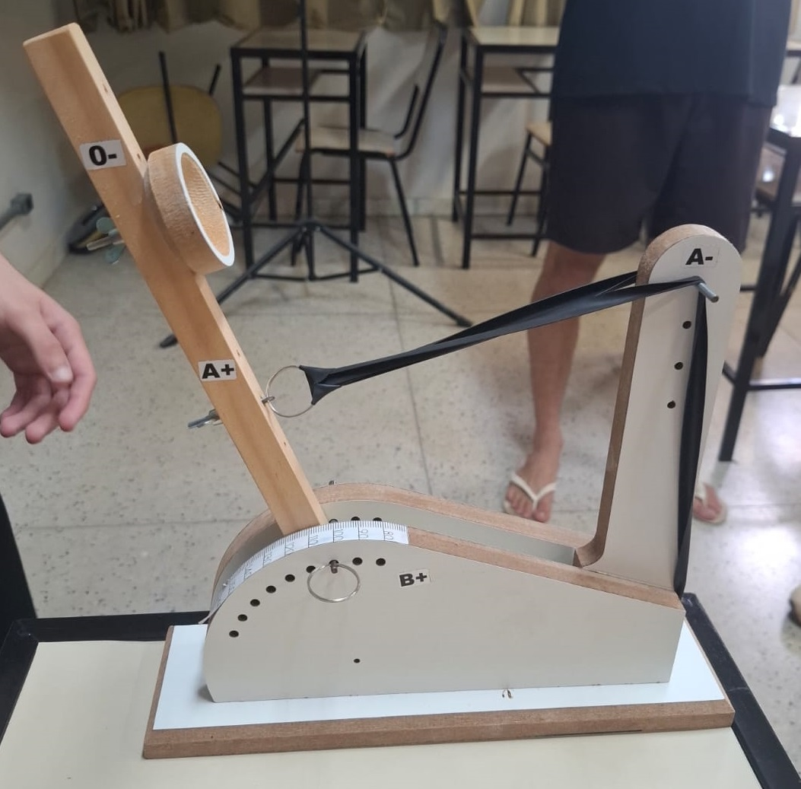
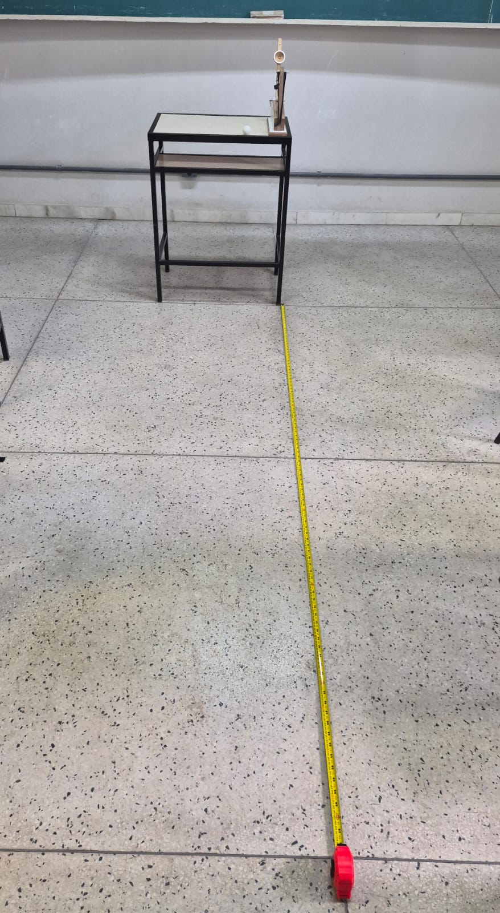
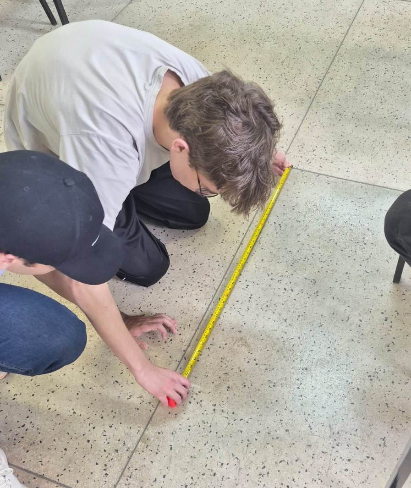
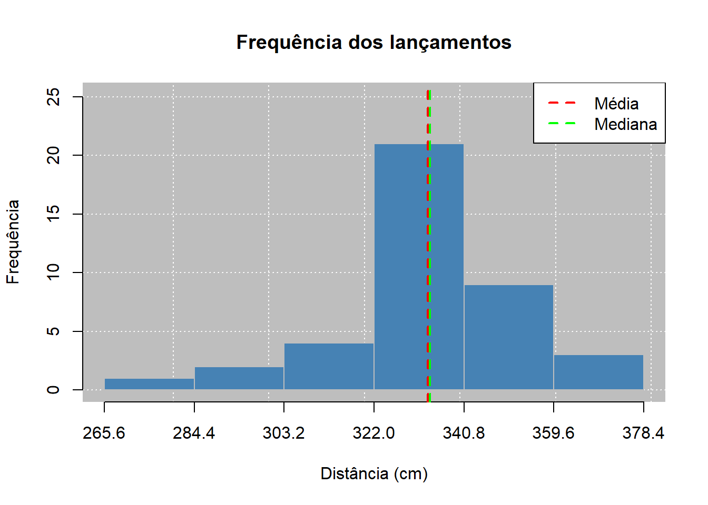

[1] 96.0 89.0 89.0 82.5 43.5 118.5 115.0 91.0 79.0 89.0 73.0 85.0
[13] 119.0 97.5 102.0 90.0 88.0 100.0 91.0 86.5 70.0 91.0 80.0 78.0
[25] 86.5 68.0 25.0 79.0 107.0 67.0 52.5 81.0 109.0 83.0 74.0 84.0
[37] 89.0 82.5 81.0 70.0

Segundo Relatório do Experimento da Catapulta
Estatística e Probabilidade
Prof. Ben Dêivide (DEFIM/CAP/UFSJ)
1 Introdução
Neste relatório, será realizado mais uma coleta de dados utilizando a catapulta. Os dados serão utilizados para calcular e analisar medidas de dispersão, como a variância e o desvio padrão. O objetivo é compreender melhor a variabilidade dos dados coletados e como ela se relaciona com as medidas de tendência central, como a média e a mediana. A análise dos resultados permitirá avaliar a consistência do experimento, o quanto a distância de aterrissagem da bola de ping pong varia entre os lançamentos com os mesmos parâmetros iniciais.
2 Objetivos
2.1 Objetivo geral
Calcular e analisar as medidas de dispersão dos dados coletados a partir dos lançamentos da catapulta, para compreender a variabilidade dos resultados e sua relação com as medidas de tendência central.
2.2 Objetivos específicos
- Realizar a coleta de dados utilizando a catapulta.
- Realizar a tabulação dos dados
- Calcular as medidas de posição e dispersão para os dados exatos e tabulados.
- Analisar a variabilidade dos dados e sua relação com as medidas de tendência central.
- Discutir os resultados e possíveis fontes de variabilidade no experimento.
3 Fundamentação Teórica
Para a análise dos dados coletados será feito um estudo com base no livro de Estatística & Probabilidade aplicada às Engenharias e Ciências, Batista (2024), serão aplicados os seguintes conceitos:
Variância
Essa medida indica o grau de dispersão dos dados em relação à média, ou seja o quanto os valores se afastam da média. A variância pode ser calculada com:
\[S^2 = \frac{1}{n-1}\sum_{i=1}^{n} (x_i - \bar{x})^2 \tag{1}\]
Desvio padrão
Para facilitar a interpretação da variabilidade dos dados, o desvio padrão é utilizado, sendo a raiz quadrada da variância. Ele é expresso na mesma unidade dos dados originais, o que facilita a compreensão da dispersão em relação à média. O desvio padrão é calculado por:
\[S = \sqrt{S^2} \tag{2}\]
4 Metodologia
4.1 Procedimento
O experimento foi realizado por um grupo de seis alunos, onde cada um desempenhou uma função específica para a coleta dos dados, dentre as funções, foram realizadas as tarefas de fixar a catapulta, realizar os lançamentos, aferir e medir a distância de aterrissagem da bola, registrar os dados e tirar fotos do experimento. O procedimento seguiu os seguintes passos:
Organização do espaço:
A sala de aula foi organizada para facilitar os lançamentos, com a remoção de mesas que estavam no percurso da catapulta e a colocação de uma mesa para apoiar a catapulta.
Configuração da catapulta:
A catapulta foi montada e posicionada em uma mesa da sala de aula, com uma altura de 78 cm. As variáveis da catapulta foram organizadas de forma aleatória:
- A- na primeira posição(de cima para baixo);
- B+ 100°;
- A+ na segunda posição;
- O- na terceira posição(de baixo para cima).

Lançamento teste:
Foi realizado um primeiro lançamento teste para verificar onde a bola de ping pong aterrissaria, e a partir disso, foi decidido medir com referência da segunda divisão do piso a partir do ponto de lançamento, facilitando a coleta dos dados. A referência está a 2.5 metros do ponto de lançamento, como mostrado na imagem abaixo:

Lançamentos e coleta de dados:
Foram realizados um total de 40 lançamentos consecutivos, com a mesma configuração da catapulta, e a distância de aterrissagem da bola de ping pong foi medida a partir da referência e registrada para cada lançamento.

Imagem da medição da distância
4.2 Materiais utilizados
Para esse procedimento foram utilizados:
- Uma mesa da sala de aula (de 78 cm);
- Uma catapulta.
- Uma bolinha de pingue-pong.
- Uma trena.
- Um caderno para registro dos dados.
5 Resultados e Discussão
5.1 Apresentando os resultados com comentários
Os Dados coletados nos 40 lançamentos foram os seguintes (em cm):
Como a medição foi feita a partir do ponto de referência, é preciso somar a distância medida com a distância do ponto de referência para obter a distância total percorrida pela bola. Assim, os dados corrigidos e ordenados são:
[1] 275.0 293.5 302.5 317.0 318.0 320.0 320.0 323.0 324.0 328.0 329.0 329.0
[13] 330.0 331.0 331.0 332.5 332.5 333.0 334.0 335.0 336.5 336.5 338.0 339.0
[25] 339.0 339.0 339.0 340.0 341.0 341.0 341.0 346.0 347.5 350.0 352.0 357.0
[37] 359.0 365.0 368.5 369.0Com os dados corrigidos, pode-se realizar a tabulação utilizando o pacote leem:
Table of frequency
Type of variable: continuous
Classes Fi PM Fr Fac1 Fac2 Fp Fac1p Fac2p
1 265.6 |--- 284.4 1 275.0 0.03 1 40 3 2.5 100.0
2 284.4 |--- 303.2 2 293.8 0.05 3 39 5 7.5 97.5
3 303.2 |--- 322 4 312.6 0.10 7 37 10 17.5 92.5
4 322 |--- 340.8 21 331.4 0.52 28 33 52 70.0 82.5
5 340.8 |--- 359.6 9 350.2 0.22 37 12 22 92.5 30.0
6 359.6 |--- 378.4 3 369.0 0.07 40 3 7 100.0 7.5
==============================================
Classes: Grouping of classes
Fi: Absolute frequency
PM: Midpoint
Fr: Relative frequency
Fac1: Cumulative frequency (below)
Fac2: Cumulative frequency (above)
Fp: Percentage frequency
Fac1p: Cumulative percentage frequency (below)
Fac2p: Cumulative percentage frequency (above) As medidas de posição para os dados tabulados e exatos são:
- Média: 333.28 cm e 334.55 cm
- Mediana: 333.64 cm e 335.75 cm
As medidas de dispersão com base nas equações Equação 1 e Equação 2 para os dados tabulados e exatos são:
- Variância: 377 cm² e 336.77 cm²
- Desvio padrão: 18.35 cm e 18.35 cm
Nota
As medidas foram calculadas utilizando R dentro do Quarto, as funções utilizadas foram: mean(), median(), var(), sd() para os dados exatos, e as funções mean(), median(), variance() e sd() do pacote leem para os dados tabulados.
A variância e desvio padrão são maiores quando calculados a partir dos dadostabulados, isso acontece porque com os valores tabulados ela passa a tratar todos os resultados de cada classe como ponto médio, quando muitos dos dados exatos estão próximos desse centro da classe, a variância tabulada (geralmente) superestima a distância desses valores, com relação à média geral, já que ela mede a dispersão dos dados.
Com o grafico de barras da frequência dos lançamentos, é possível visualizar a distribuição dos dados e as posições da média e da mediana, mostrando a assimetria dos dados:
barplot(lancamentos_tabulados, main = "Frequência dos lançamentos", xlab = "Distância (cm)", ylab = "Frequência", barcol = "steelblue")
abline(v = mean(lancamentos_leem), col = "red", lwd = 2, lty = 2)
abline(v = median(lancamentos_leem), col = "green", lwd = 2, lty = 2)
legend("topright", legend = c("Média", "Mediana"), col = c("red", "green"), lwd = 2, lty = 2)
5.2 Discutindo os resultados
Depois de tudo isso, com os dados apresentados, podemos comentar a respeito de uma única discrepância: temos um dado de 25 cm, que difere muito de todos os outros dados, e está bem distante da média (cerca de 84.5 cm) e da mediana (cerca de 83.2 cm), e isso pode ter feito com que a média fosse puxada para baixo, assim como os valores muito mais altos (como 118.5 cm e 199 cm) podem ter puxado a média para cima. Isso tudo cria uma distribuição que não é simétrica, isso somado a alta variância (de 336.77 cm) e o desvio (de 18.35 cm) confirmam essa forma espalhada que os dados se encontram
5.2.1 Comentando a respeito desses resultados
- Os resultados estão de acordo com o esperado?
- Há grande variabilidade? O que isso significa no contexto do experimento?
- Quais fatores podem ter influenciado os resultados?
- Existem possíveis fontes de erro experimental?
Respostas
Os resultados estão bons visto que a média e a mediana estão próximas, mas a diferença entre os dados tabulados e os exatos mostra a perda de precisão
Nesse experimento tivemos uma variabilidade considerável, o desvio padrão (de 18.35 cm) e a média (de 84.55 cm) mostram uma variação considerável, mostrando que a catapulta não é perfeitamente consistente, o que é esperado de um experimento em aula.
Acredito que a força elástica pode ter influenciado os resultados por conta do seu desgaste conforme realizávamos o experimento, o posicionamento também pode ter se modificado mesmo que um pouco por sermos nós alunos que segurávamos tudo, e durante o experimento, notamos que a diferença de posicionamento do nó do elástico (antes, em cima ou depois do metal que segura ele) essa diferença de posicionamento, influenciava ativamente na distância que a bolinha percorria se era maior ou menor, isso por conta de como esse posicionamento modifica a forma como o elástico da catapulta se comporta.
Acredito que por ter sido feito em sala de aula, pode ter havido erros de medição (por conta de uma imprecisão na leitura da trena ou mesmo de onde exatamente a bolinha caiu); e também, como na responsta acima, a constante elástica ao longo do tempo pode ter sido alterada também.
Procure não apenas descrever, mas interpretar os dados.
5.3 💬 Exemplo de como citar uma referência bibliográfica
Depois de inserido as informaçõe no arquivo referencias.bib, use:
- Segundo Batista e Oliveira (2022)
- Tudo é um objeto em R (Batista e Oliveira, 2022)
6 🧠 Considerações finais
Apresente uma síntese dos principais pontos observados no experimento.
- Retome o objetivo da prática e indique se ele foi alcançado.
- Destaque os principais aprendizados obtidos.
- Comente brevemente sobre a qualidade dos dados coletados.
- Sugira possíveis melhorias no procedimento experimental.
Evite repetir apenas os resultados; foque nas conclusões e reflexões sobre a prática realizada.
7 📖 Referências
BATISTA, B. D. O. Estatística Básica aplicada às Engenharias e Ciências. 1. ed. Ouro Branco, MG: [s.n.], 2024.
BATISTA, B. D. O.; OLIVEIRA, D. A. B. J. R básico. 1. ed. Ouro Branco, MG: [s.n.], 2022. p. 321